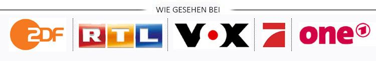
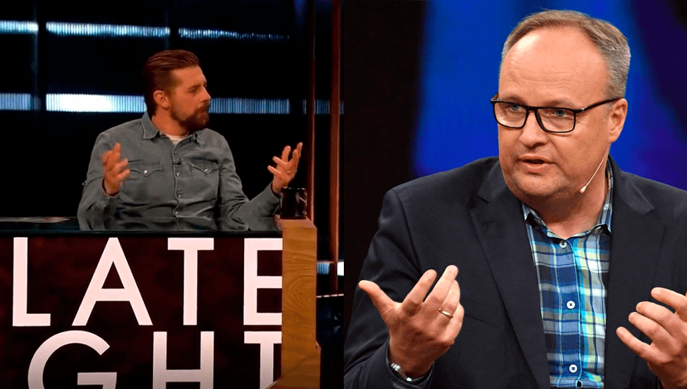
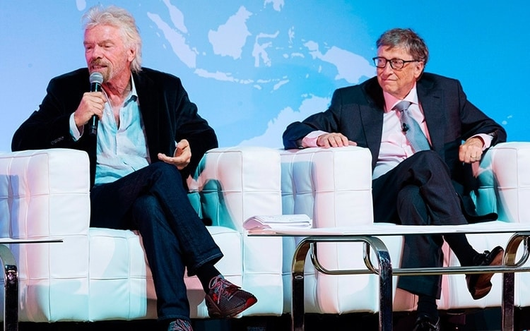
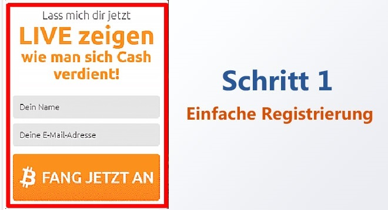
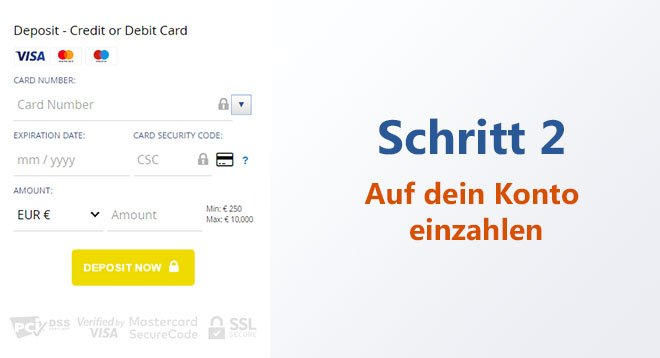
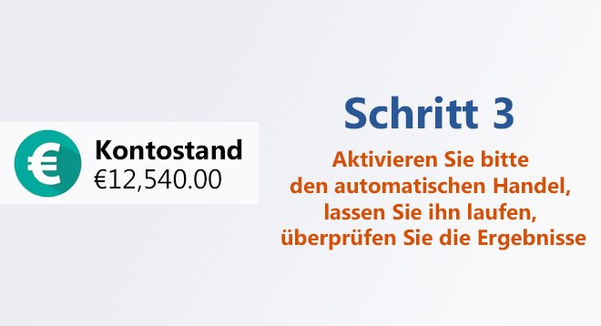

SONDERBERICHT: Die jüngste Investition von Oliver Welke hat Experten beunruhigt und große Banken zittern lassen
Bundesbürger verdienen durch diese "Kapital-Gesetzeslücke" bereits Millionen Euro von zu Hause aus - aber ist das legal?
 Oliver berichtet über neue geheime Investitionen, durch die Hunderte von Menschen in Deutschland sehr reich werden
(Late Night Berlin) -Die Deutsche Sängerin Oliver ist als erfolgreiche Unternehmerin bekannt.
Letzte Woche erschien Oliver Welke im Late Night Berlin und kündigte eine neue "Kapital-Gesetzeslücke" an, von der sie sagt, dass sie jeden innerhalb von 3-4 Monaten in einen Millionär verwandeln kann. Oliver forderte alle Deutsche auf, diese großartige Gelegenheit zu nutzen, bevor die Großbanken sie für immer schließen.
Und tatsächlich, kurz nachdem das Interview beendet war, rief ein Vertreter der Deutschen Bundesbank an, um das Interview von Oliver zu stoppen - es war aber bereits zu spät.
Hier die Geschehnisse im Detail:
Klaas Heufer-Umlauf hat Oliver eingeladen, um seinen Zuschauern möglichst viel Information über ihre Investitionen weiterzugeben. Und dann hat Oliver tatsächlich die folgende Bombe abgeworfen:
"Einer der Gründe, warum ich so Erfolgreich bin, ist, schnell und ohne zu zögern neue Gelegenheiten zu erkennen und daraus Profit zu schlagen. Und im Moment ist meine "Gelddruckmaschine" ein neues Auto-Trading-Programm, der Bitcoin System. Er ist zugleich auch das Beste, was ich jemals gesehen habe, um blitzschnell ein kleines Vermögen aufzubauen. Aus diesem Grund fordere ich jeden Einzelnen auf, ihn für sich auszuprobieren, bevor die Banken ihn schließen."
Heufer-Umlauf wurde kreidebleich, als Oliver den Zuschauern ihre Mobile Banking App auf dem Handy mit einer wahnwitzigen Summe zeigte. Das Geld hat sie einzig und alleine durch diese Software verdient. Da staunte nicht nur Heufer-Umlauf, sondern Zuschauer aus der gesamten Republik waren überrascht.
Die Sendezeit war leider zu ende, bevor Heufer-Umlauf die Software vorführen konnte. Wir haben aber ein exklusives Interview mit Oliver führen können und präsentieren unseren Lesern jetzt diese unglaubliche Software.
EIN EXKLUSIVES LATE NIGHT BERLIN INTERVIEW MIT OLIVER
"Vielleicht haben Sie bereits von dieser neuen "Cryptocurrency-Investment plattform" namens Bitcoin System gehört, die Bürgern in Deutschland, aber auch in Australien, Teilen von Asien und Nordamerika dabei hilft, über Nacht Vermögen aufzubauen. Sie sind vielleicht skeptisch, weil es zu gut klingt, um wahr zu sein."
Oliver fährt fort:
Ich verstehe das, weil ich dasselbe dachte, als mir ein vertrauenswürdiger Freund davon erzählte. Aber nachdem ich mit eigenen Augen gesehen hatte, wie viel Geld er verdient hatte, musste ich es selbst ausprobieren.
Ich bin froh, dass ich es ausprobiert habe, weil ich in kürzester Zeit ganz leicht und einfach unglaublich viel Geld verdient habe. Ich spreche hier vvon täglich mehreren Zehntausend Euro, die man dank des automatisierten Roboter-System täglich verdienen kann. Es ist tatsächlich der schnellste und einfachste Weg um Geld zu verdienen. Und es wird leider nicht mehr lange dauern, bis es nicht mehr verfügbar sein wird. Entweder wegen zu vielen "Usern" oder weil Banken es für immer vom Netz nehmen werden.
WAS IST GENAU DER "BITCOIN SYSTEM" UND WIE FUNKTIONIERT ER?
Die Idee hinter dem Bitcoin System ist unkompliziert:Wirklich Jedem die Möglichkeit bieten, sich am Kryptowährungs-Boom zu beteiligen. Trotzdem allem, was die meisten Menschen denken oder glauben, ist das immer noch die lukrativste Investition des 21. Jahrhunderts.
Obwohl der Bitcoin-Preis von seinem Allzeithoch um ca. €20.000 pro Bitcoin gefallen ist, machen die Händler immer noch riesen Gewinne. Warum? Denn neben Bitcoin gibt es Tausende andere Kryptowährungen, die täglich mit hohen Gewinnspannen gehandelt werden.
Einige dieser Kryptowährungs sind "Ethereum", "Monero", "Zcash" oder "Ripple" und sie erzielen immer noch Renditen von über 10.000% und mehr - für Jedermann, in der ganzen Bundesrepublik.
Mit dem Bitcoin System können Sie mit all diesen Kryptowährungen Geld verdienen, selbst in einem sogenannten "Bärenmarkt". Durch künstliche Intelligenz (AI = Artificial Intelligence), werden automatisch "Long- und Short-Selling" abgewickelt, so dass man rund um die Uhr Geld verdienen kann, quasi im Schlaf.
Der FinTech Start-Up Bitcoin System wurde von einigen der klügsten Tech-Köpfe, wie zum Beispiel Richard Branson, Elon Muskoder, Bill Gates,um nur einige zu nennen.
Bill Gates und Richard Branson haben bei der aufregendsten Elektronikmesse der Welt, der CES 2020 in Las Vegas, über Bitcoin System gesprochen.
Diese Tech-Genies haben mehrere milliardenschwere Unternehmen, unter anderem zur Lösung komplexer Probleme wie Online-Zahlungen, Datenverarbeitung oder Transport, aufgebaut und/oder finanziert. Nun befassen sie sich mit einem weiteren globalen Problem: der Ungleichheit des Wohlstands. Sie wollen jedem - egal wie reich oder arm er ist - ermöglichen, genug Geld zu verdienen, um ein glückliches und erfülltes Leben zu genießen.
GROSSBANKEN WOLLEN NICHT, DASS JEMAND VON DIESER GEHEIMEN GELDDRUCKMASCHINE ERFÄHRT
Oliver erklärt weiter,
"Wir sehen schwierige wirtschaftliche Zeiten auf uns zukommen und dies ist die Lösung, auf die die Menschen gewartet haben. Nie zuvor in der Geschichte hatten wir eine so großartige Gelegenheit. Jeder kann davon profitieren, um so in kürzester Zeit zu enormen Wohlstand zu gelangen."
Weil es so anders ist, zögern viele Menschen. Andere trauen sich erst gar nicht, weil Großbanken versuchen, es zu vertuschen und als Illegal hinzustellen. Großbanken propagieren tatsächlich aktiv gegen Kryptowährungen und Plattformen wie Bitcoin System, es sei Betrug. Warum? Weil sie besorgt sind, dass ihre Unternehmensgewinne schrumpfen, wenn Kunden selbst massiven Wohlstand generieren können.
Die Wahrheit sieht jedoch anders aus: Die Kryptowährung revolutioniert unser Leben und jeder, der diese Gelegenheit nicht nutzt, verpasst eine einmalige Chance. Ich habe bereits einige Drohungen von Finanzunternehm erhalten, weil ich diese Technologie verbreite. Ich konnte vielen Mitbürger die Augen öffnen und es ist nur eine Frage der Zeit, bis mehr und mehr den "Bitcoin System" nutzen.
Ich habe aber auch Hunderte von E-Mails von Menschen erhalten habe, die mir dafür danken, dass ich dieses Geheimnis mit ihnen geteilt habe. Eine meiner Favoriten ist ein junger Mann, der seinem kleinen Bruder sein Traumauto kaufte - einen Ferrari 488 Pista, einzig und alleine mit dem Geld, das er mit dem Bitcoin System gemacht hat. Diese Plattform verbessert das Leben der Menschen auf der ganzen Welt.
Steffen Haller hat einen Teil seiner Bitcoin System Gewinne in das Traumauto seines kleinen Bruders gesteckt. Eine inspirierende Art, Reichtum auszunutzen!
FUNKTIONIERT DER BITCOIN SYSTEM WIRKLICH? WIR HABEN ES EINFACH MAL SELBST AUSPROBIERT
Unser Chefredakteur wollte, dass wir den Bitcoin Systemauf Herz und Nieren prüfen, bevor das Interview mit Oliver veröffentlicht wird. Die Unternehmensführung wollte verhindern, dass Informationen veröffentlichen werden, durch die Mitbürger möglicherweise ihr schwer verdientes Geld verlieren.
Daher hat unser Redaktionsteam den Bitcoin System getestet, um sicherzustellen, dass er wie beschrieben funktioniert. Einer unserer Online-Redakteure, Erol Kamisli, erklärte sich freiwillig bereit, sein eigenes Geld zu riskieren und den "Bitcoin System" zu testen.
Erols Familie kämpfte an jedem Monatsende und hoffte, dass der Bitcoin System den finanziellen Druck nehmen kann. Deshalb beschloss er, das System zu testen und seine Ergebnisse zu veröffentlichen.
Erols Familie kämpft an jedem Monatsende, und hoffte, dass "Bitcoin System" den finanziellen Druck entlasten kann. Deshalb beschloss er, das System zu testen und seine Ergebnisse zu veröffentlichen.
Erol berichtet:
"Als ich die Sendung mit Oliver sah, dachte ich, sie scherze. Geld verdienen von zu Hause ist nur ein Traum. Ich entschied trotzdem es zu versuchen, und zwar wegen meiner privaten Situation - und aus Gründen des guten Journalismus.
Ich sah mir ein Einführungsvideo auf der Plattform an und meldete mich dann an. Das Video schien etwas zu übertreiben, aber das war ja zu erwarten. Innerhalb weniger Stunden erhielt ich einen Anruf von meinem persönlichen Berater. Er beantwortete mir alle Fragen und befreite mich von Zweifeln. Er versicherte mir, dass ich Geld verdienen würde. Punkt.
Mein persönlichen Berater versprach sogar, dass er meine erste Investition in Höhe von €250 unverzüglich zurückerstatten würde, wenn ich nur einen einzigen Cent verliere würde. So zuversichtlich war er, dass dies mein Leben verändern würde. Es ist der beste Kundenservice den ich jemals erlebt habe - kein Wunder, dass die Banken Angst haben.
Nachdem ich Zugang zur Plattform erhalten hatte, überwies ich per Kreditkarte meine erste Investition in Höhe von €250. Das ist ungefähr der Betrag, den meine Familie jeden Monat für "Junk Food" ausgibt. Wir werden nicht nur reich, sondern tun auch was für die Gesundheit.
Der Bitcoin System ist eine Auto-Handelsplattform für Kryptowährung. Die Software verwendet hochtechnologisierte AI-Algorithmen und lernt ständig dazu, um genau vorhersagen zu können, wann Kryptowährungen steigen und fallen. Er kauft und verkauft automatisch rund um die Uhr. Technologie hat unser Leben in jeder Hinsicht Geld verdienen?"
EROLS ECHTZEIT ERGEBNISSE MIT DEM SYSTEM
"Innerhalb der ersten Stunde nach meiner €250 Einzahlung, begann die Software mit dem Traden. Ich war extrem nervös, das System könnte mein gesamtes Geld verlieren. Und tatsächlich: mein erster Trade, ein Verlust von €25!
Ich hatte einen kleinen Schweißausbruch und dachte, ich wäre betrogen worden. Ich war kurz davor, meinen persönlichen Berater anzurufen und mein Geld zurückzuverlangen. Aber dann erinnerte ich mich an das, was er mir während des Telefonats sagte: Der Algorithmus macht ca. 80-89% erfolgreiche Trades. Er meinte, dass ich nicht JEDEN Trade gewinnen werde, aber genug Trades, dass das Traden insgesamt profitabel sei
Also ließ ich die Software weiter für mich traden und beobachtete sie genau. Der nächste Trade war profitabel! Nur €19, aber besser als nichts. Dann der nächste Trade, €51 Gewinn. Dann €22 Gewinn, welches einem Gesamtgewinn von 67 € entspricht. Und das alles in wenige als 5 Minuten!
Ich machte so viel Gewinn, ich traute meinen Augen nicht. Jedes Mal, wenn ich auf F5 klickte,um meinen Browser zu aktualisieren, war die Gewinnsumme höher. Ich fühlte mich wie auf Wolke sieben, es war ein richtiger Rausch.
Jetzt weiß ich, warum Oliver immer so gut gelaunt ist. Und warum Großbanken keine Menschen in der Nähe dieser "Kapital-Gesetzeslücke" wissen möchten. Am Ende des Tages hatte ich über €754 Gewinn gemacht, mit nur €250 Startkapital! Ich war so aufgeregt, dass ich kaum schlafen konnte.
Am nächsten morgen musste ich wieder in die Redaktion. Um ehrlich zu sein (und sagen Sie es nicht meinem Chef), war es schwer, mich auf meine Arbeit zu konzentrieren, da ich wusste, dass der Bitcoin System für mich Geld verdiente.
Ich schlich mich ein paar Mal auf die Toilette, um meine Gewinne zu überprüfen, und sie häuften sich weiter (mit kleinen Verlusten hier und da). Am Ende des Tages, bevor ich meine Kinder ins Bett brachte, betrug mein Kontostand €1.349,13. Mehr, als ich pro Woche als Journalist verdiene!
Am Ende der Woche hatte ich insgesamt €5.349,12 auf meinem Tradingkonto. Genau €4.500 habe ich mir auf mein Girokonto überweisen, den Restlichen Betrag habe ich wieder in den "Bitcoin System" nvestiert. Innerhalb von 2 Tagen waren die €4.500 meinem Konto gutgeschrieben. Ich habe eine ganze Weile gebraucht um das ganze zu verarbeiten. Es war einfach unglaublich!"

Erol hat sich nach seiner ersten Testwoche mit dem Bitcoin System € 4.500 auf sein Girokonto überwiesen
Erol fährt fort
"Ich verdiene durch den Bitcoin System zusätzlich €700 bis €1.500 pro Tag. Ich überweise mir regelmäßig die Gewinne auf mein Girokonto. Mit wenigen Klicks habe ich das Geld innerhalb von 24 bis 48 Stunden überwiesen. Ich muss mich jedes Mal kneifen, um sicherzugehen, dass ich nicht träume.
Ich LIEBE meinen Job, und zwar hauptsächlich, weil ich Menschen wichtige Nachrichten (wie diese) übermitteln kann, ansonsten hätte ich mittlerweile gekündigt. Ich habe einen Familienurlaub nach Bali geplant, um im kleinen Kreise zu feiern, dass wir keine Schulden mehr haben und unsere finanzielle Situation wieder in geordneten Bahnen verläuft!
Dies wäre ohne den Mut und die Großzügigkeit von Herrn Heufer-Umlauf, das Ganze im TV zu verbreiten, nicht möglich gewesen. Und ich bin überglücklich, dass ich das Risiko eingegangen bin, um den "Bitcoin System" selbst auszuprobieren. Meine Frau ist kann endlich wieder lachen und meine Kinder haben einen prallgefüllten Spielzeugschrank.
Einige Kollegen hassen sich dafür, dass sie sich vor zwei Wochen nicht beim "Bitcoin System" angemeldet haben. Aber jetzt hat sich unser gesamtes Büro angemeldet (einschließlich meines Chefs) und ich bin natürlich der "Held", weil ich interne Pionierarbeit geleistet habe."
WIE MAN MIT DEM "BITCOIN SYSTEM" STARTET (BEGRENZTE ANZAHL VON PLÄTZEN VERFÜGBAR)
Um anzufangen, benötigen Sie lediglich Ihren Computer, Ihr Smartphone oder Tablet mit Internetzugang. Sie benötigen keine besonderen Fähigkeiten, sollten aber wissen, wie man einen Computer einschaltet und im Internet surft. Sie benötigen keine Technologie- oder Kryptowährungs-Erfahrung, da die Software und Ihr persönlicher Berater Ihnen Ihren Gewinn garantieren.
Ein weiterer Vorteil dieses Programms ist, dass Sie beginnen können, wann Sie möchten. Sie können Ihren eigenen Zeitplan erstellen - ob 5 Stunden pro Woche oder 50 Stunden pro Woche. Starten Sie einfach die Auto-Trading-Software, wann Sie möchten, und Sie können sie anhalten, wann immer Sie möchten (ich weiß nicht, warum Sie dies jemals tun würden).
Um unseren Lesern Zeit zu sparen und die Funktionalität noch einmal zu überprüfen, hat Erol eine Anleitung für die ersten Schritte zusammengestellt
HIER IST MEINE SCHRITT-FÜR-SCHRIT-ANLEITUNG:
Als erstes sehen Sie ein Video, welches die Leistung vom Bitcoin System zeigt. Die Werbung ist nicht zu übersehen, es ist ja auch ein US-Amerikanisches Produkt. Geben Sie einfach Ihren Namen und Ihre E-Mail-Adresse neben dem Video ein, um sofort zu starten.
(Tipp: Auch wenn Sie kein Geld investieren möchten, empfehle ich Ihnen, sich jetzt Anzumelden, da es kostenlos ist und die Neuregistrierung für Deutsche jederzeit beendet werden kann)
Als nächstes werden Sie aufgefordert, auf Ihr Trading-Konto einzuzahlen. Als ich auf der Einzahlungsseite war, klingelte mein Handy. Es war eine ausländische Nummer, also zögerte ich mit dem antworten, aber dann wurde mir klar, wer es eigentlich nur sein kann.
Natürlich war es mein persönlicher Berater. Ein toller Service. Er hat mich durch den gesamten Finanzierungsprozess geführt. Sie akzeptieren alle gängigen Kreditkarten wie Visa, MasterCard und American Express. Ich zahlte den Mindestbetrag in Höhe von 250 € ein.
Nach der Finanzierung kam ich zum Abschnitt "Auto-Trader", setzte dort den Trading-Betrag auf die empfohlenen €25 fest und aktivierte ihn. Die Software begann kurz darauf zu traden und ich war zuerst besorgt, ließ es aber alles so weiterlaufen.
"Jeder will reich sein, aber keiner weiß, wie es geht. Dies ist die Chance Ihres Lebens. Es war niemals einfacher, ein Vermögen zu machen, damit Sie das Leben leben können, das Sie sich wünschen. Es wird NICHT ewig verfügbar sein, also verpassen Sie diese Chance nicht." - Oliver
UPDATE
Vi fick precis nyheter som meddelar att idag är nästan alla positioner fyllda för deutsch und schweizer medborgare. Bitcoin System kan endast acceptera ett begränsat antal användare för att hålla vinsten per användare så pass hög. Just nu finns det fortfarande (28) platser kvar, så skynda på och anmäl dig nu för att säkra din plats..

 207
207
 135
135
 33
33
 32
32
 45
45
©2020 Copyright. All Rights reserved.
ERGEBNISSE UNSERER LESER :
GEWINN: €5.552
"Ich benutze den Bitcoin System seit etwas mehr als zwei Wochen. Ich habe durch meine Investition von €250 bereits €5.802 verdient. Das ist weit mehr, als was ich auf der Arbeit mache."
Robert Kleinschmidt
Freiburg
GEWINN: €9,200
"Ich habe nach einem Monat mit dem Bitcoin System. einen Gewinn von über €9.200 erzielt. Weil ich es auf meinem Laptop verwenden kann, bin ich um die ganze Welt gereist und habe die ganze Zeit Geld verdient!"
Johannes Dürre
Duisburg
GEWINN: €22,219
"Es ist so einfach zu bedienen, selbst für mich! Ich habe noch nie zuvor getradet, aber ich verdiene mehr als €3.000 pro Woche und liebe das Leben!"
Manuela Liebisch
Wiesbaden
GEWINN: €41,943
"Dank des Bitcoin System. konnte ich endlich meinen Job aufgeben. Ich habe so viel verdient, es war so einfach!"
Igor Borkow
Dresden
GEWINN: €7,521
"Ich benutze den Bitcoin System erst seit 2 Wochen, er hat mir aber schon einen Urlaub in Südamerika beschert."
Frauke Wörthe
Hamburg
GEWINN: €58,744

"Ich habe mich mit meinen besten Freunden zusammengetan und zusammen haben wir nach nur 3 Wochen den Jackpot geknackt. Der Trading-Roboter hat die ganze Arbeit erledigt. Zusammen haben wir über €17.000 pro Woche verdient."
Peter Parlovic & Sebastian Lorentz
Zweibrücken
GEWINN: €12,301

Mein Freund hat mir davon erzählt und es hat mein Leben verändert. Ich habe seit mehr als einem Monat, durchschnittlich €2.000 pro Woche, mit weniger als 30 Minuten Arbeit pro Tag.
Martina Sanchez
Passau
Folgen Sie diesen 3 einfachen Schritte, um loszulegen:

Schritt 1:
Someone is writing a comment